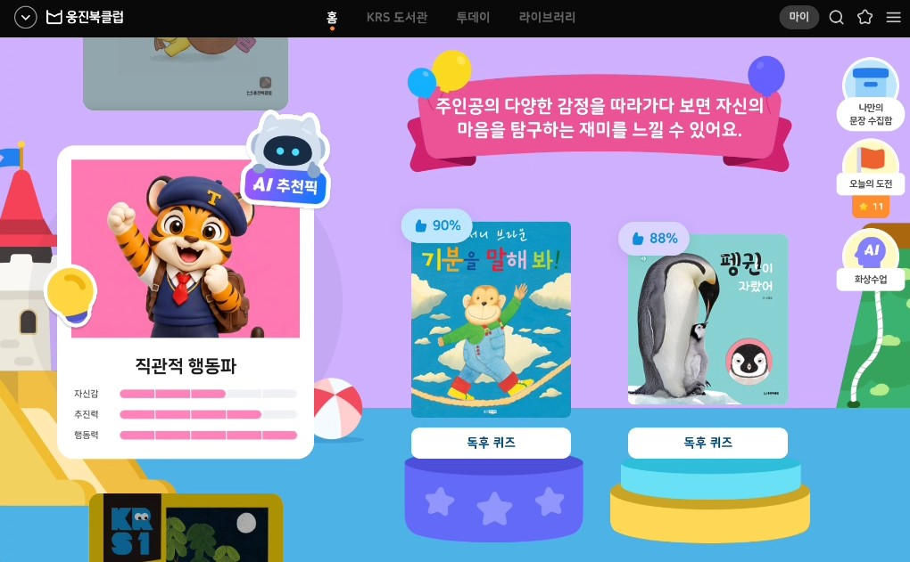
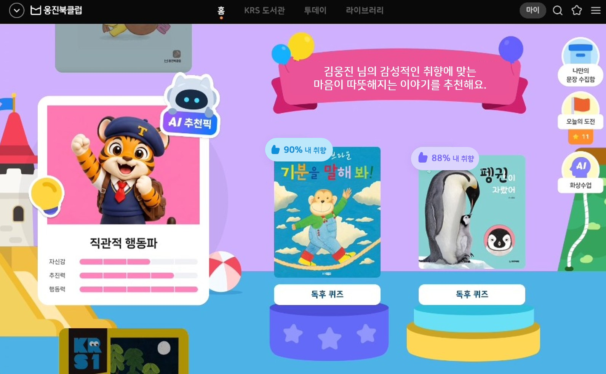
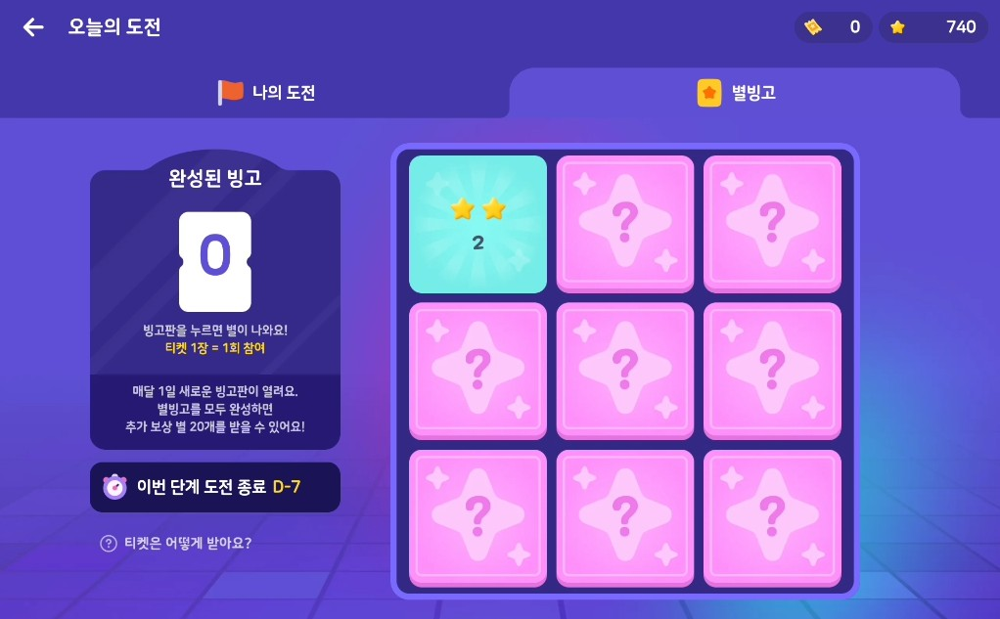
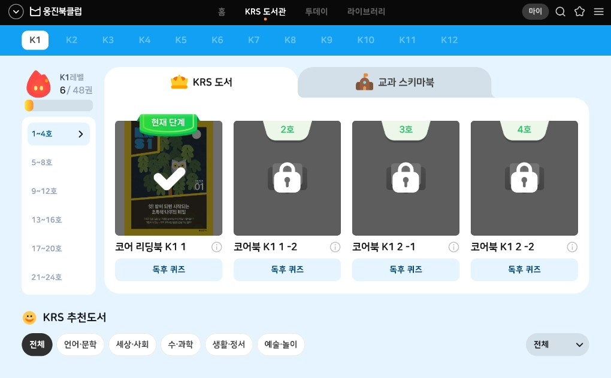
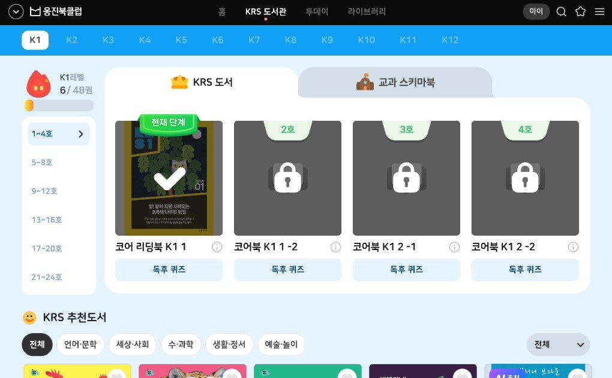

아이가 스스로 시작하고 · 이어서 수행하고 · 의미를 이해하는가를 6개 가설로 구분하고, 각 가설별 검증 방법과 성공 기준을 사전에 정의한 뒤 그대로 측정하였다.
| 구분 | 검증 가설 | 검증 방법 | 성공 기준 |
|---|---|---|---|
H1 자발적 시작 |
별도 설명 없이 KRS 홈에서 스스로 학습을 시작할 수 있다 | 홈 진입 후 첫 행동, 스크롤 여부, 도움 요청 횟수 | 80% 이상 자발적 시작 |
H2 흐름 유지 |
코어북 → 나문수 → 퀴즈 → 스키마북 → 퀴즈 → 어휘챌린지 → 별빙고로 자연스럽게 이어서 수행한다 | 단계별 완료율, 중도 이탈률 | 80% 이상 Flow 유지 |
H3 기능 목적 이해 |
KRS의 주요 기능과 콘텐츠의 목적을 이해하고 자연스럽게 이용할 수 있다 | 화면별 인터뷰, 관찰, 도움 요청 횟수 | 80% 이상 각 기능의 목적을 이해 |
H4 AI 추천 탐색 |
AI 추천은 아이들이 쉽게 이해하고 신뢰한다 | AI 추천 의미 이해, 추천 콘텐츠 클릭률 | 50% 이상 추천 영역 탐색 |
H5 별빙고 동기 |
별빙고 보상은 학습 동기를 높여 커리큘럼 참여를 지속시킬 수 있다 | 보상 획득 후 반응 관찰, 인터뷰, 학습 지속 의향 확인 | 50% 이상 긍정 반응 및 재참여 의향 |
H6 도서관 이해 |
KRS 도서관이 책을 만나는 공간임을 알고, 레벨 맞춤 도서 추천을 이해한다 | 공간 인식 질문, 탐색 행동 | 50% 이상 목적 이해 |
각 가설의 판정은 위 검증 방법에 정의된 지표로만 산출하였다. H6은 도서관의 공간 목적 인지 기준으로 최신화된 가설을 적용하였다. 지표별 측정 결과는 11페이지 종합 판정에 정리하였다.
아이는 스스로 시작하고 도움 없이 끝까지 수행하였다. 보완이 필요한 1건은 AI 추천이며, 이와 별개로 저연령층 읽기 지원이 과제로 확인되었다. 전체 25명 기준
| 첫 행동 | 인원 | 비율 |
|---|---|---|
| 도서 등 콘텐츠 즉시 실행 | 12명 | 48% |
| 스크롤 탐색 | 11명 | 44% |
| GNB 메뉴 이동 | 2명 | 8% |
| 합계 | 25명 | 100% |
질문한 2명도 곧바로 콘텐츠를 실행해 위 12명에 포함된다.
12명은 첫 화면에서 곧바로 학습을 실행했고, 11명은 스스로 스크롤해 탐색한 뒤 시작했다. 무엇을 눌러야 할지 찾아 헤맨 아이가 없다. 남은 2명도 도움을 요청한 것이 아니라 "뭐부터 해야 해요?"라고 물었을 뿐이다. 진입 사용성은 검증된 셈이다.
| 구분 | 원인 | 인원 |
|---|---|---|
| 소리 내어 읽고 말하기 8명 · 73% | 말하기 녹음 미션 — 글자·문단을 소리 내어 읽고 말하는 부담 | 8명 |
| 그 외 3명 · 27% | 분량 부담 — 스키마북 15~20분 | 2명 |
| 집중·흥미 저하 | 1명 |
잠시 멈춘 지점은 말하기 녹음 미션에 몰려 있다. 11명 중 8명(73%)이 이 구간에서 멈췄다.
순서를 헷갈린 아이는 없었다. 멈춘 이유는 한 곳으로 모인다 — 잠시 중단 경험 11명 중 8명이 말하기 녹음 미션에서 멈췄다. 글자를 몰라 못 읽은 아이도 있지만, 읽을 수 있는데 소리 내어 읽기가 부담스러워 안 읽은 쪽이 더 크다. K1 7명 전원이 소리 내어 읽기에 부담을 표시했다.
| 상황 | 인원 |
|---|---|
| 무엇을 해야 할지 몰라 관찰자가 순서를 안내 | 2명 |
| 활동 종료 후 나가기 버튼을 인지 못함 | 1명 |
세 명 모두 기능을 못 다룬 것이 아니라 어디부터 시작할지 · 어디로 나갈지에서 멈췄다. 진입과 종료 시점의 안내만 보완하면 되는 범위다.
아이들은 목차의 각 활동이 무엇인지 이해한 상태로 진행했다. 코어 리딩북을 읽고 독후 퀴즈를 풀고, 교과 스키마북·어휘챌린지·별빙고까지 정해진 순서를 그대로 완주한 아이가 21명(84%)이다. 책 읽기인지 활동인지 따로 설명하지 않아도 알아보고 바로 이용했다.
| 코어북 독서 시점 | 인원 | 추천도서 클릭 | 비율 |
|---|---|---|---|
| 미리 읽고 옴 현장에서는 1권만 읽음 | 5명 | 4명 | 80% |
| 현장에서 처음 읽음 2권을 연달아 읽음 | 20명 | 7명 | 35% |
같은 화면을 보고도 클릭률이 2.3배 갈렸다. 차이를 만든 것은 추천의 설득력이 아니라 그 자리에서 읽은 책이 1권이냐 2권이냐였다.
클릭하지 않은 14명은 추천을 거부한 것이 아니다. 하루 분량인 2권을 막 끝낸 직후였고, 그 자리에서 세 번째 책을 열 체력이 남아 있지 않았다.
코어북을 미리 읽고 와 그 자리에서 1권만 읽은 5명은 80%가 추천 도서를 눌렀고, 2권을 연달아 읽은 20명은 35%에 그쳤다. 교과 스키마북에서 15~20분에 힘들다고 멈춘 아이가 2명, 반대로 힘이 남은 아이는 세션이 끝난 뒤에도 남아서 추천 도서를 계속 읽었다. 이 수치를 가르는 것은 추천의 설득력이 아니라 남은 체력이다.
| 이해 수준 | 인원 | 비율 |
|---|---|---|
| 스스로 이해 | 16명 | 64% |
| 설명을 들은 뒤 이해 | 3명 | 12% |
| 부분 이해 "책 많이 읽으면 되는 것 같아요" | 1명 | 4% |
| 이해하지 못함 · 미확인 | 5명 | 20% |
| 합계 | 25명 | 100% |
한편 공간 목적 인지는 21명(84%)으로 4개 공간 중 가장 높다. 다수가 질문 이전에 스스로 판을 뒤집었다.
공간의 목적은 84%가 즉시 알았지만 별을 얻는 방법은 64%만 이해했다. 상당수가 규칙을 모르는 상태에서 "다시 하고 싶다"고 답한 것이다. 동기가 이해에 앞서 발생하므로, 규칙 안내를 더해도 흥미를 잃지 않고 지속성만 끌어올릴 여지가 있다.
별빙고는 그날의 학습을 완료해야 빙고 칸이 열리는 구조다. 즉 획득 방법을 정확히 아는 것이 곧 학습 완료로 이어진다. 규칙 안내는 재미를 위한 장치가 아니라 학습 지속률을 직접 끌어올리는 지렛대다.
| 응답 유형 | 인원 | 비율 |
|---|---|---|
| "내게 맞는 책이 있는 곳" 큐레이션 인식 | 3명 | 12% |
| "책을 읽는 곳" 일반 도서관 개념 | 10명 | 40% |
| 다른 기능으로 해석 "내가 읽은 책이 나온다" · "잠긴 책을 읽어야 풀린다" | 5명 | 20% |
| "잘 모르겠어요" | 7명 | 28% |
목적을 이해한 13명 중 10명은 "책 읽는 곳"이라는 일반적인 도서관 개념을 말했다. KRS 도서관만의 차별점인 '내게 맞는 책'까지 도달한 것은 3명이다. 기준은 넘었으나 실질은 범용 개념의 전달 수준이며, 잠금 UI를 해금 공간으로 읽은 사례가 그 방증이다.
| 구분 | 가설 | 성공 기준 | 결과 | 판정 |
|---|---|---|---|---|
H1 자발적 시작 | 별도 설명 없이 KRS 홈에서 스스로 학습을 시작할 수 있다 | 80% | 92% 23/25 | 충족 |
H2 흐름 유지 | 코어북 → 나문수 → 퀴즈 → 스키마북 → 퀴즈 → 어휘챌린지 → 별빙고로 자연스럽게 이어서 수행한다 | 80% | 84% 21/25 | 충족 |
H3 기능 목적 이해 | 주요 기능과 콘텐츠의 목적을 이해하고 자연스럽게 이용할 수 있다 도움 없이 진행 22명 · 질문 및 도움 필요 3명 | 80% | 88% 22/25 | 충족 |
H4 AI 추천 탐색 | AI 추천은 아이들이 쉽게 이해하고 신뢰한다 추천 도서 클릭 11명 · 2권을 끝낸 직후 측정 | 50% | 44% 11/25 | 보완 필요 |
H5 별빙고 동기 | 별빙고 보상은 학습 동기를 높여 커리큘럼 참여를 지속시킬 수 있다 | 50% | 84% 21/25 | 충족 |
H6 도서관 이해 | KRS 도서관이 책을 만나는 공간임을 알고, 레벨 맞춤 도서 추천을 이해한다 | 50% | 52% 13/25 | 충족 |
핵심 질문 "스스로 완주할 수 있는가"에 그렇다고 답할 수 있다. 시작·순서·기능 이용·보상 반응 네 축이 모두 기준을 넘었다. 특히 시작 92%·기능 이해 88%로, 아이가 어른의 개입 없이 첫 화면에서 마지막 활동까지 도달하는 데 구조적인 장애물은 발견되지 않았다.
AI 추천 한 건. 다만 이 지표는 아이들이 오늘 몫인 2권을 이미 끝낸 자리에서 측정되었다. AI 추천픽은 본래 다음 날 다시 들어와 읽는 공간이므로, 한 자리에서 더 읽히는지가 아니라 내일 다시 누르는지로 다시 측정해야 한다.
화면 수정만으로 대응 가능한 오픈 전 적용 3건과, 별도 설계·개발이 필요한 오픈 후 고도화 3건으로 구분하였다. 상세 근거는 이어지는 14~21페이지에 정리하였다.
👍99%를 인기순·쪽수로 이해한 아동이 5명이다. 표시에 '내 취향' 워딩을 붙이고 추천 문구를 추천 이유 중심으로 바꾼다.
재참여 의향 21명(84%)으로 가장 높은데 별 획득 방법 이해는 64%다. 규칙 설명보다 반응을 키우는 쪽이 효과가 크다.
첫 화면에서 바로 실행한 아동이 12명이다. 하단 도서가 걸쳐 보여야 아래가 있다는 것을 인지한다.
K1·K3 18명 중 6명이 읽기에서 걸렸고 스스로 도움을 청한 아이는 0명이다. 집에서는 부모가 그 자리를 대신하게 되어 리텐션 위험으로 이어진다.
17명(68%)이 기질카드·캐릭터에 반응했고 누르면 활동이 시작될 것으로 기대했으나, 눌러도 연결되는 화면이 없다.
책 읽기를 빼면 활동은 4종 · 6.9분(K1 8.3분)뿐이고, 그중 둘은 같은 독후퀴즈다. 주차별로 다른 활동을 배치해 개수와 다양성을 함께 확보한다.
기능 신설 없이, 화면 표현만 조정 — 이번 개발 회차에 즉시 반영


"사람들이 좋아요 해둔 거" / "총 책의 쪽수" / "인기순"
주인공의 다양한 감정을 따라가다 보면 자신의 마음을 탐구하는 재미를 느낄 수 있어요
김웅진 님의 감성적인 취향에 맞는 마음이 따뜻해지는 이야기를 추천해요



기능 신설과 커리큘럼 재편 — 일정과 리소스를 확보해 순차 적용
꼬불꼬불 숲길에 수북수북
누구 똥?
뿌지직 큰 똥
어슬렁어슬렁 곰 똥!
세 버튼 모두 아이가 직접 눌러 쓰는 도구다.
막힌 인원은 둘 다 3명이지만 K1은 10명 중 4명꼴이다. 어릴수록 읽기에서 멈춘다.
이번엔 관찰자가 메웠지만 집에서는 부모가 그 자리를 대신하게 되고, 그때 리텐션이 먼저 무너진다.
진단평가를 받고 온 아이는 자기 캐릭터를 바로 알아보고 반가워했다(7명). 기질카드에 관심이 없던 아이도 캐릭터만큼은 좋아했다.
▶ 다음 장 계속
1화는 지금 열고, 다음 화는 공개 예정으로 남겨 다시 올 이유를 만든다.
카드를 좋아한 이유는 예뻐서, 그리고 누르면 활동이 시작될 것 같아서였다. 뒤쪽은 맞는 기대인데, 아직 열릴 화면이 없어 17명의 관심이 카드 앞에서 멈춰 있다.
네 활동 모두 2분 남짓이고 그중 둘은 같은 형식의 독후퀴즈다. 형식으로 세면 3종뿐이다.
26주 반복을 피해 한 칸만 주차별로 교체한다. 앞뒤 흐름은 그대로 두므로 개발 부담이 작다.
화면 표현만 바꾸면 되는 3건을 이번 개발 회차에 반영합니다.
읽기 지원이 1순위입니다. 리텐션에 직접 걸린 유일한 항목입니다.
아이가 혼자서도 끝까지 갈 수 있는 KRS로
오픈까지 잘 마무리하겠습니다.